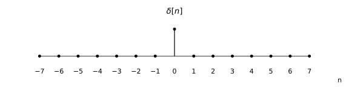
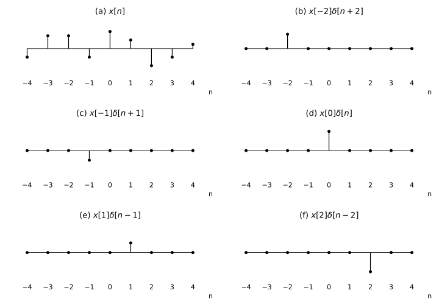
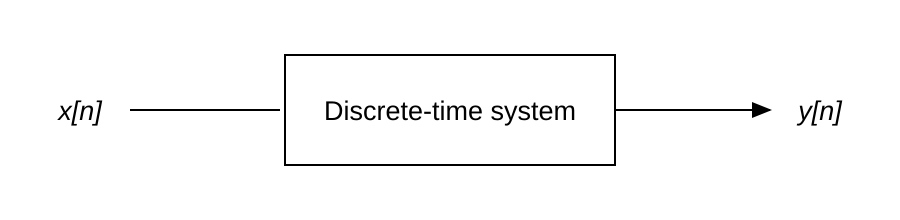
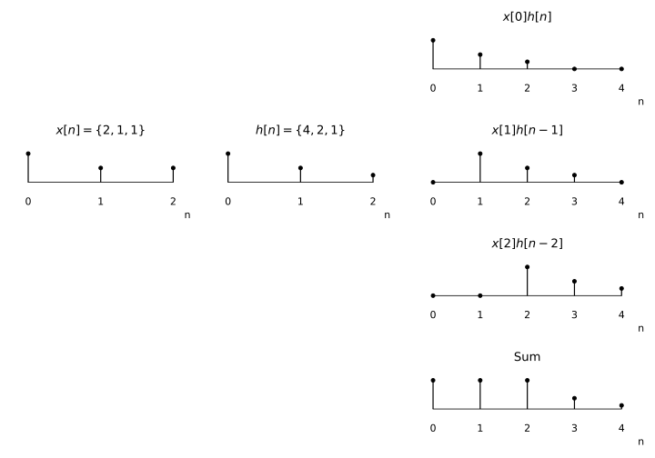

From Imaginary Numbers to FFT — Part 2: Why Complex Exponentials Matter
This post explains why complex exponentials play such a key role in the mathematical derivations in Signals and Systems.
Unless otherwise noted, the figures and quoted passages in this post come from Signals and Systems.
Discrete-time signals
This is a discrete-time unit impulse signal (Figure 1.28), with its mathematical definition alongside it.


Clearly, any discrete-time signal can be broken down into a series of unit impulses, weighted and shifted, and then added together.

We can express this process mathematically as:
What we have just described is how to break a discrete-time signal down into a series of unit impulses, scale their amplitudes, shift them in time, and then add them together.
Discrete-time linear time-invariant systems
A discrete-time system is a system whose input and output are both discrete-time signals. Clearly, all digital signal processing algorithms in a computer are discrete-time systems.

Not every system can be studied. For example, if a system gives a different output at every moment for the same input, with no certainty at all, we have no way to study it. Or if making the input just a little larger produces a completely different output, we have no way to study that either.
In Signals and Systems, we study only linear time-invariant systems:
- Time invariance means that a time shift in the input signal produces the same time shift in the output signal. (In plain language: give it the same input in the morning or at night, and you get the same output.)
- Linearity means that the superposition property holds. If the output of is , then the output of is .
Here is an example. Play Jay Chou on QQ Music, and we hear Jay Chou. Play Eason Chan on Bilibili, and we hear Eason Chan. Play both at the same time, and we hear Jay Chou + Eason Chan—it does not somehow turn into Stefanie Sun! That is superposition.
Play it in the morning or at night, and the result is the same. That is time invariance.
But if the computer is not plugged in, it shuts down after playing for a few hours. Now the system is time-varying. This shows that there are almost no truly linear time-invariant systems in the real world. But under certain conditions—over a short time, for instance, or as long as the input is not too large—we can always treat them as linear time-invariant systems and study them that way. Without the mathematical properties of linear time-invariant systems, we would struggle to get anywhere.
The convolution sum
So far, we have learned two ideas:
- Any discrete-time signal can be broken down into a sum of unit impulses that have been scaled in amplitude and shifted in time.
- We study only linear time-invariant systems, which satisfy time invariance and superposition.
Now let’s ask a question: is there a way to work out the output when any discrete-time signal is fed into a discrete-time linear time-invariant system?
Since we can break any discrete-time signal down into unit impulses, what if we know the output of each unit impulse in this system? Scale those impulse outputs, shift them in time, and add them together—wouldn’t that give us the output of the original signal? Let’s put that idea into mathematics.
↓ LTI superposition and time invariance ↓
We call the output of a unit impulse the unit impulse response, usually written as .
Let’s demonstrate this mathematical result with an example. That should make it easier to picture.

To sum up: for a discrete-time linear time-invariant system, as long as we know its unit impulse response, we can calculate its output for any discrete-time input signal. Pretty neat, isn’t it?
We can write this calculation more briefly using a new symbol, *, and call it convolution.
In other words, when a discrete-time signal is fed into a discrete-time linear time-invariant system, the output is the input signal convolved with the system’s unit impulse response.
Here is a website where you can calculate convolution online:
Calxy — Discrete Convolution Calculator
Eigenfunctions
What happens if the input is a complex exponential signal?
Let
where is a decimal. Clearly, the smaller is, the more densely samples . For example, if , then:
We can shorten it to . After all, n is the only independent variable, and it is easier on the eyes this way.
Next, let’s find the output of by applying the convolution calculation from the previous section:
The move from the second line to the third is called the commutative property of convolution. Here is a brief proof:
Let or, equivalently, . Then equation (2.39) becomes
The move from the fourth line to the fifth uses the rules for complex functions. To make it completely clear, let’s write that step out:
From the fifth line to the sixth, is not a function of , so it can be taken outside the summation.
And that completes the proof. We get:
What does this expression mean?
First, is the complex exponential input, while is not a function of n. In other words, this expression is a constant—a complex number. So the expression above becomes:
In other words, after a complex exponential passes through a linear time-invariant system, its frequency stays the same. Only its amplitude and phase change. And seen in the complex domain, changing the amplitude and phase amounts to nothing more than multiplying by a complex number! Because of this wonderful mathematical property, we call the complex exponential an eigenfunction of the system.
Here, or is a complex amplitude factor, generally a function of the complex variable s or z. If a system’s output response to a signal is simply a constant (possibly complex) times that input, the signal is called an eigenfunction of the system, and the amplitude factor is called its eigenvalue.
Fourier series
From the previous section, we know that when a complex exponential passes through a linear time-invariant system, only its amplitude and phase change; its frequency does not. Mathematically, we simply multiply it by a complex number.
So could we follow the idea from the first section and break any signal down into a sum of complex exponentials? If we can prove that this works, we gain a new perspective: break any signal into a series of complex exponentials, pass it through a linear time-invariant system, and the result is still a sum of those same complex exponentials, each multiplied by a constant.
“Breaking any signal down into a sum of complex exponentials” is the famous Fourier transform—and that is what we will discuss in the next post.